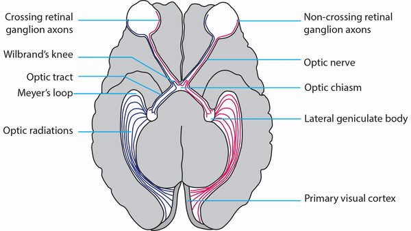

Retrochiasmal Segment

-
Optic tract
- Conveys signals from opposite visual hemifield to lateral geniculate body
-
Lateral geniculate body
- Contains synapses for signals coming from optic tract
- Maintains segregation of signals from each eye, as signals from ipsilateral eye terminate in layers 2,3, and 5, while signals from contralateral eye terminate in layers 1,4, and 6
- Modifies signals by means of descending attentional and limbic input from cerebrum
-
Optic radiations
- Contain axons exiting from lateral geniculate bodies
- Some axons loop around anterior temporal horn of lateral ventricle (“Meyer’s Loop”) and then rejoin rest of optic radiations, which form wide band along border of lateral ventricle, eventually dividing into superior and inferior forks at atrium of lateral ventricle
- Superior fork of optic radiations enters superior portion of primary visual cortex; inferior fork of optic radiations enters inferior portion of primary visual cortex
-
Primary Visual Cortex
- Signals coming from central 5-10 degrees of visual field terminate in posterior visual cortex; signals coming from between 10 degrees and 60 degrees eccentric
- Signals coming from between 10 degrees and 60 degrees eccentric to fixation terminate in intermediate primary visual cortex
- Signals coming from beyond 60 degrees (“unpaired temporal crescent”) terminate on anterior visual cortex


-
Optic tract lesions
- Complete homonymous hemianopias
- Incomplete but incongruous homonymous hemianopias (defects unequal in extent in two eyes)
-
Lateral geniculate body lesions
- Complete homonymous hemianopias
- Hourglass-shaped sectoranopias
-
Tip: because mass lesions usually cause damage that extends beyond these small structures, it destroys the entire lateral geniculate body, and visual field defects are complete homonymous hemianopias; however, occlusion of anterior or lateral choroidal arteries, a rare phenomenon, may produce hourglass homonymous hemianopias
-
Tip: inflammation and infarction may target BOTH lateral geniculate bodies in isolation
-
Optic radiations lesions
- Superior wedge-shaped homonymous hemianopia, also called “pie-in-the-sky” defects, from Meyer’s Loop damage; common cause is temporal lobectomy for intractable seizures
- Congruous homonymous hemianopia from posterior optic radiation damage
-
Primary visual cortex lesions
- Complete homonymous hemianopia (lesion damages entire visual cortex)
- Congruous homonymous hemianopia (lesion damages visual cortex incompletely)
- Superior homonymous quadrantanopia (lesion damages only inferior visual cortex)
- Inferior homonymous quadrantanopia (lesion damages only superior visual cortex)
- Homonymous paracentral scotomas (lesion restricted to posterior visual cortex)
- Macular-sparing homonymous hemianopia (lesion restricted to midportion and anterior portion of visual cortex
- Temporal crescent-sparing homonymous hemianopia (lesion spares anterior visual cortex)
- Temporal crescent scotoma (lesion restricted to anterior visual cortex)
-
Tip: these 5 types of visual field defects are ALWAYS caused by occipital cortex lesions
-
Qomonymous quadrantanopia
-
Macular-sparing homonymous hemianopia
-
Homonymous paracentral scotomas
-
Temporal crescent-sparing homonymous hemianopia
-
Temporal crescent scotoma
-